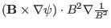
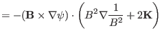
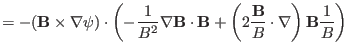
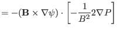

Next:
proof
Up:
misc contents
Previous:
proof
proof of
The left-hand side of the equation is written as
(
361
)
Using
, the above equation is reduced to
Another way to prove that

is equal to
: The difference of these two terms is



Thus we prove that
(
362
)
Next:
proof
Up:
misc contents
Previous:
proof
yj 2015-09-04
![$\displaystyle -
\frac{2}{B_0^3} (\mathbf{B}_0 \times \nabla \psi) \cdot [\mathb...
..._0
+\mathbf{b} \cdot \nabla \mathbf{B}_0 +\mathbf{B}_0 \cdot \nabla
\mathbf{b}]$](img1020.png)